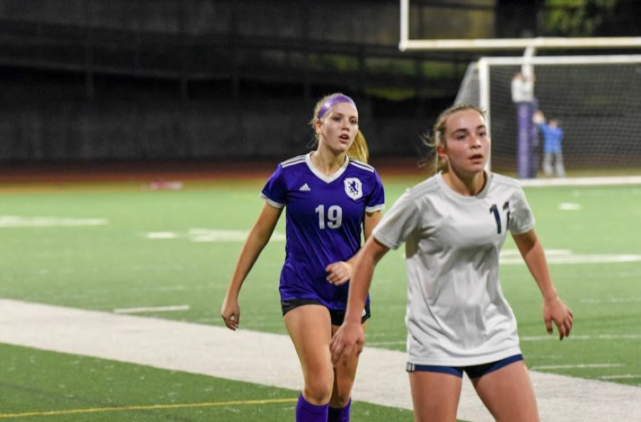
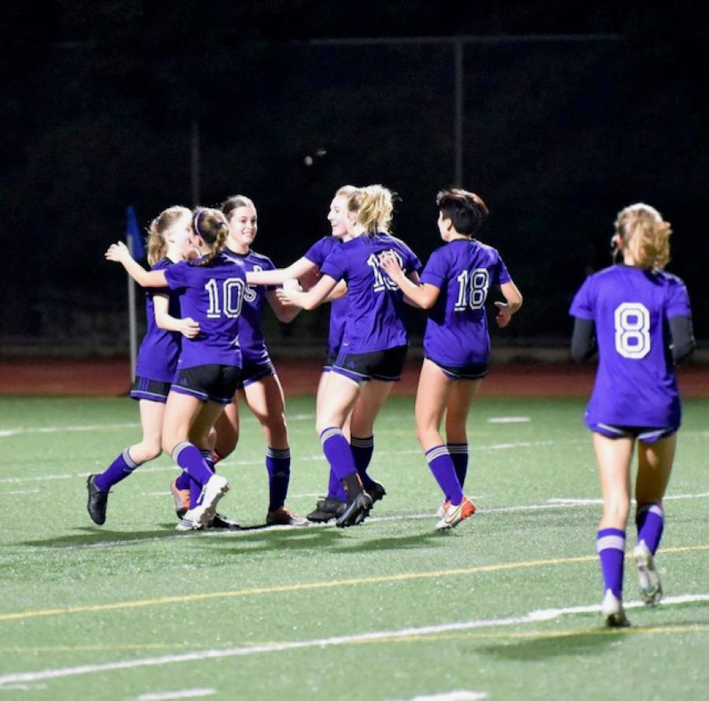

One thing that I tried to make time for this year was traveling. I went on many small trips, such as the one displayed in the first picture. I took some of my friends to Carmel Valley where we enjoyed warm weather. I also went on a service trip to mexico(bottom picture), where my peers and I built homes for families.
 Soccer was probably my favorite part of the year. In addition to playing club soccer, I played for my highschool team and we had a lot of success. For example, we beat teams such as Berkeley and Odowd, that I had never beat in my career. We also made it all the way through the playoffs, and ended up winning the sectional championship!